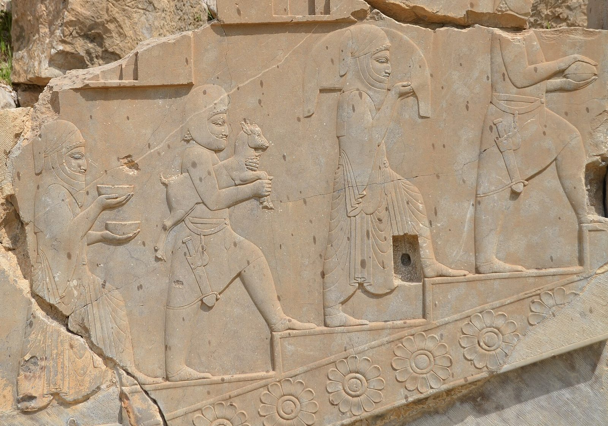
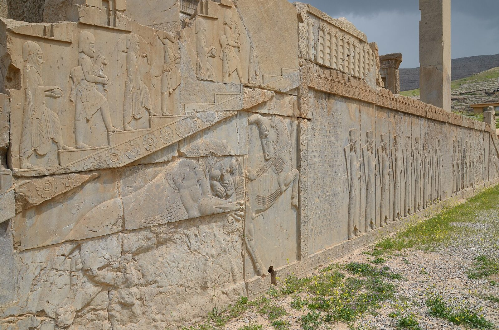

Unit 2 · Persepolis · Lesson 15
Bringing it together: unit checkpoint and timed practice
What do you know across the whole case study, and can you use it on sources you have never seen, against the clock?
Year 11 Ancient History · Present with → or space · Read on a phone with R

Checkpoint · 2 minutes · the review item the class found hardest
First, one thing to fix from the last review
How did Darius I say he became king in 522 BCE, and why do historians doubt it?
At Behistun he says a Magian, Gaumata, posed as Cyrus’s son Bardiya and seized the throne, and that he killed him with Ahuramazda’s help. It is the winner’s own account: some historians think Darius overthrew the real Bardiya.
What do the Apadana stairway reliefs show, and why are some delegations debated?
23 delegations bring gifts, each led in by an usher. None is labelled: historians identify them by their dress and gifts, so some identifications are still debated.
What are the Fortification Tablets, and what do they record?
Tens of thousands of clay tablets and fragments (509–493 BCE), mostly in Elamite, some in Aramaic, found in 1933 in the fortification wall: records of rations for workers, officials and travellers.
How does Arrian explain the burning of the palace?
As a deliberate act, done against the advice of Alexander’s general Parmenio: Alexander said he wished to take vengeance for the Persian invasion of Greece. Arrian himself thinks it was not wise.
How does Diodorus explain the burning?
At a feast after victory games, with the drinking far advanced, the Athenian Thaïs urged Alexander to set fire to the palaces; he led a torch procession (a comus) and threw the first torch.
Where and when did Alexander defeat Darius III, and what followed?
At Gaugamela, in 331 BCE. Alexander then took Babylon and Susa, forced the Persian Gates and reached Persepolis early in 330 BCE.
Then books closed: ten questions across the whole case study.
Checkpoint · books closed · 5 minutes · press K, click 5, then Start · answer in full sentences
Ten questions across the whole case study
Dot points: 1 the empire and its early capitals · 2 location · 3 discovery and excavation · 4 archaeological sources · 5 layout and features · 6 design and ornamentation · 7 a centre of power · 8 the burning debate · 9 interpretations and representations
- dot point 1What did Darius I change about the satrapies, and what does Herodotus say the Persians called him?
- dot point 1Give one continuity and one change from Pasargadae to Persepolis.
- dot point 2Where was Persepolis built, and why did that location matter to the kings?
- dot point 3Name one gain and one loss from the excavations of the 1930s.
- dot point 4What survives of glazed brick at Persepolis, and what does that mean for colour reconstructions of the site?
- dot point 5Name three zones of the terrace, with one building in each.
- dot point 6Name one feature of Achaemenid design and the tradition it came from. Why did the kings combine traditions?
- dot point 7Distinguish power displayed from power exercised, with one source for each.
- dot point 8What did the excavators find that shows how the palaces were destroyed, and what can it not tell us?
- dot point 9How did Mohammad Reza Shah use Persepolis in 1971, and how did critics see it?
Checkpoint · mark in a different colour · 1 mark each · both parts needed for the mark
Mark your answers: questions 1–5
| Q | Question | A strong answer |
|---|---|---|
| 1 | dot point 1 Darius I and the satrapies | He reorganised the satrapies (provinces under governors, which already existed under Cyrus): Herodotus says into twenty, each with a fixed tribute. So, Herodotus reports, the Persians called Darius ‘the merchant’ (Cambyses ‘the master’, Cyrus ‘the father’). |
| 2 | dot point 1 Pasargadae to Persepolis | Continuity: columned halls (Palaces S and P → the Apadana, the Hall of a Hundred Columns), or guardian figures at a gate (Gate R → the Gate of All Nations). Change: one terrace holding all the main buildings (Pasargadae’s own platform, Tall-e Takht, was left unfinished), greater scale, or a more uniform court style. |
| 3 | dot point 2 location | In Fars (Pārsa), the Persian homeland in south-west Iran, at the foot of Kuh-e Rahmat above the Marv Dasht plain, about 40 km from Cyrus’s Pasargadae. It mattered most, probably, for royal identity: it tied the king’s power to his own people’s land. (Accept display, water and food, roads or defence, with a reason.) |
| 4 | dot point 3 the 1930s excavations | Gain: buried reliefs, the gold and silver foundation tablets and the Fortification Tablets were found and recorded (Herzfeld 1931–34, Schmidt 1935–39). Loss: the layers were cleared away and survive only in the records, paint traces faded once uncovered, and finds went abroad. |
| 5 | dot point 4 glazed brick | Only fragments at Persepolis (a frieze of palmettes and two bricks with circular bands); the best-preserved Achaemenid glazed-brick panels, such as the archers, come from Susa (now in the Louvre). So a colour reconstruction of Persepolis fills the gaps from paint traces on the reliefs, from other sites and from guesswork: it is evidence of what its makers imagined, not direct evidence. |
Checkpoint · mark in a different colour · 1 mark each · both parts needed for the mark
Mark your answers: questions 6–10
| Q | Question | A strong answer |
|---|---|---|
| 6 | dot point 5 zones of the terrace | Any three: ceremonial and audience (north): the Apadana, the Hall of a Hundred Columns, the Gate of All Nations · royal residences (south): the Tachara, the Hadish · storage and administration (south-east): the Treasury · defence: the walls and towers on the east. |
| 7 | dot point 6 design | For example: human-headed winged bulls (lamassu) on the east side of the Gate of All Nations, an Assyrian tradition · fluted columns and fine stone-working, by Ionian (Greek) and Lydian craftsmen · Egyptian-style cornices over doors and windows. Why: probably to present one empire, built by and ruling over many peoples, in a single deliberate court style. |
| 8 | dot point 7 displayed or exercised | Displayed: how the king wanted his power to be seen, e.g. the throne-bearer reliefs, the Apadana delegations, or Darius’s inscriptions (DPd asks Ahuramazda to protect the land from invaders, famine and the Lie). Exercised: how it actually worked, e.g. the Fortification Tablets (rations for workers, officials and travellers) or the Treasury Tablets (payments, partly in silver). |
| 9 | dot point 8 the archaeology of the fire | Found: scorched walls and floors and charred roof timbers in the Apadana, the Hall of a Hundred Columns and the Treasury, which had been emptied first (the excavators found mainly objects the looters had rejected or lost); the Hadish was badly destroyed, though no burnt layer is reported there, while parts of the Tripylon escaped the fire. Cannot tell us: who lit the fire, why, or whether anyone was drunk. The selective pattern is used to argue that it was planned, but that is an inference. |
| 10 | dot point 9 1971 | In October 1971 he held a celebration of 2,500 years of Persian monarchy at Persepolis, with a tent city for foreign guests, presenting his reign as the culmination of the kingship begun by Cyrus the Great. Critics attacked its huge cost (contemporary press estimates put it at over US$100 million, though estimates differ) and its message. |
Checkpoint · 2 minutes · your score, dot point by dot point
Tally your score by dot point
| Dot point | Questions | My score | If it is low, revise |
|---|---|---|---|
| 1 the empire and its early capitals | 1–2 | / 2 | Lessons 1–2 |
| 2 location | 3 | / 1 | Lesson 3 |
| 3 discovery and excavation | 4 | / 1 | Lesson 4 |
| 4 archaeological sources | 5 | / 1 | Lessons 6–8 |
| 5 layout and features | 6 | / 1 | Lesson 5 |
| 6 design and ornamentation | 7 | / 1 | Lesson 9 |
| 7 a centre of Persian power | 8 | / 1 | Lessons 10–11 |
| 8 the burning: Alexander’s role | 9 | / 1 | Lessons 12–13 |
| 9 interpretations and representations | 10 | / 1 | Lesson 14 |
When each dot point is called, hands up if you got full marks on it. Your teacher notes which dot points need revision before you move on.
Circle every dot point where you lost a mark. Revise them first, using the quick checks at the end of those lessons in Read mode.
Learning intentions and success criteria · 2 minutes
Today’s goals
- bring together what we have learned about Persepolis
- practise source analysis and interpretation under time conditions
- answer retrieval questions on every dot point
- write a timed OVPRL and a short interpretation response
- name one thing to keep doing and one to fix in my timed writing
Syllabus outcomes: AH-11-01 explains continuity and change in the ancient world · AH-11-05 analyses different types of sources for evidence to support a historical account or argument · AH-11-06 explains differing interpretations and representations of the past · AH-11-07 communicates historical understanding, applying historical knowledge, terms and concepts. Life Skills: AH-LS-08 uses sources to form conclusions about the past · AH-LS-11 communicates information about the past using historical terms and concepts.
Note-making · the routine for the whole course
How to structure your notes
questions and key terms, written after
short phrases, arrows (→ leads to), abbreviations (c. = about; BCE = Before the Common Era)
- 1Rule up the page firstA cue column about a quarter of the page wide; title and date at the top; room for a summary at the bottom.
- 2Listen and look, then writeDon’t copy while a slide is being explained. Phrases, not sentences.
- 3Write your own notes at each ✎ checkpointThen compare with the model notes, one row at a time. Add what you missed in a second colour.
- 4Write the cue questions afterwardsUse exam verbs: explain, analyse, assess. To revise, cover your notes and answer the cues.
- 5Finish with a three-sentence summaryOne checkpoint today, if time or at home: the timed practice. Today’s main writing is on lined paper, not notes.
Key vocabulary · the unit word wall · keep it beside you if you use the vocabulary list
Words for today’s timed practice
| For Part A · the relief | Meaning |
|---|---|
| Achaemenid | The royal family (and empire) descended, they claimed, from an ancestor called Achaemenes; it ruled Persia from Cyrus the Great to Darius III. |
| Relief | A carving that stands out from a flat stone background. |
| Court style | The deliberate royal style of Achaemenid art, combining traditions from across the empire into a single look. |
| Ideology | A set of ideas used to explain and justify power. |
| Polychromy | The use of many colours, as on the originally painted reliefs. |
| Ration | A fixed amount of food or drink given as payment or support. |
| For Part B · the burning | Meaning |
|---|---|
| Gaugamela | The battle (331 BCE) in which Alexander defeated Darius III, opening the way to Persepolis. |
| Thaïs | An Athenian woman who, according to Diodorus, Curtius and Plutarch, urged the burning of the palace at a feast. |
| Premeditated | Planned in advance. |
| Vulgate tradition | The group of ancient Alexander histories (Diodorus, Curtius and others) thought to share a lost source, often identified as Cleitarchus. |
| Interpretation | A historian’s explanation or judgement about the past, based on evidence. |
| Representation | A depiction of the past (in art, writing, ceremony or buildings) shaped by its maker’s time and purpose. |
1 · Feedback in action · 8 minutes · your Lesson 14 paragraph · use a second colour
Rewrite the move your next step names
- Read the strength and the next step on your paragraph.
- Find the sentence the next step is about, and the matching point on the class checklist from Lesson 13.
- Rewrite that sentence underneath, in a second colour.
- In the margin, say what you changed: your thinking, your evidence or your language?
A rewrite is not a neater copy. It must change what the sentence does.
Next stepEvaluate: weigh a rival view instead of adding another example.
BeforeThe 1971 celebration also shows that Persepolis was important to the Shah.
AfterYet the 1971 celebration, which presented the Shah’s reign as the culmination of Cyrus’s kingship, reveals more about its maker than about Persepolis, and its critics, who attacked its cost and its message, show that the same representation could be read against the man who made it.
What changedThe sentence now weighs the Shah’s representation against his critics’ view (Evaluate), and a relating verb, reveals, says what the source does.
2 · You do · timed practice · reading time · 3 minutes · press K, click 3, then Start · think only: no writing, no marking
Your practice paper: two parts, 25 minutes
How useful is the relief of servants from the Tachara for understanding Persepolis as a centre of Persian power?
One OVPRL paragraph, in connected prose.
To what extent do the accounts of Arrian and Plutarch suggest that Alexander’s companions supported the burning of Persepolis?
A short response: Judge → Evidence → Analyse → Evaluate → Resolve.
No notes: the paper only. Reading time is for thinking, not writing: deconstruct each question first (verb · topic · limits · what your answer must do), read each source for its provenance, then plan, all in your head. In the HSC you may not write or mark the paper in reading time. Then 22 minutes of writing: in the first minute, mark the sources and jot your plan. Afterwards you mark both answers yourself, then with a partner.
| Part A · ask | My evidence | |
|---|---|---|
| O | Who made it, when, where, and for whom? | |
| V | What does it show about royal power? | |
| P | Why was it made, and who would see it? | |
| R | Reliable for … but not for … because … | |
| L | What can it not show? |
| Part B · ask | My evidence | |
|---|---|---|
| J | My answer: how far did his companions support it? | |
| E | One short quotation from Arrian, one from Plutarch | |
| A | What does each show the companions (or Parmenio) doing, and why? | |
| E | Do the two scenes really conflict? What can neither tell us? | |
| R | My final, refined judgement |
Use the vocabulary list and the OVPRL routine on page 2 of your booklet.
2 · You do · timed practice · Part A · the unseen source
The unseen source: a relief from Persepolis

- What: a stone relief of servants climbing a stairway, carrying food in bowls and covered dishes, and young animals
- Where: carved on the south stairway of the Tachara, the palace of Darius I, just south of the Apadana on the terrace at Persepolis; still in place
- When: 5th century BCE. The Tachara was begun by Darius I (r. 522–486 BCE) and completed after his death by his son Xerxes, whose inscription is carved on this stairway’s façade
- Who made it: sculptors working for the king; their names are not known

How useful is the relief of servants from the Tachara for understanding Persepolis as a centre of Persian power?
2 · You do · timed practice · Part B · two ancient accounts
Two ancient accounts of the burning: Arrian and Plutarch
He burnt down the Persian palace, though Parmenio advised him to preserve it, for many reasons, and especially because it was not well to destroy what was now his own property, and because the men of Asia would not by this course of action be induced to come over to him, thinking that he himself had decided not to retain the rule of Asia, but only to conquer it and depart. But Alexander said that he wished to take vengeance on the Persians, in retaliation for their deeds in the invasion of Greece, when they razed Athens to the ground and burnt down the temples. … But Alexander does not seem to me to have acted on this occasion with prudence; nor do I think that this was any retributive penalty at all on the ancient Persians.
Arrian, Anabasis of Alexander 3.18 · written in the 2nd century CE, more than 450 years after the burning (330 BCE) · Arrian names Ptolemy and Aristobulus, who both served on Alexander’s expedition, as his main sources · trans. E. J. Chinnock (1884) · Parmenio = one of Alexander’s generals
[38.1, after four months at Persepolis] … he consented to take part in a merry drinking bout of his companions, at which women also came to meet their lovers and shared in their wine and revelry. The most famous among these women was Thaïs, an Athenian, the mistress of Ptolemy, who was afterwards king. … [She said that] it would be a still greater pleasure to go in revel rout and set fire to the house of the Xerxes who burned Athens, … in order that a tradition might prevail among men that the women in the train of Alexander inflicted a greater punishment upon the Persians in behalf of Hellas … As soon as she had thus spoken, tumultuous applause arose, and the companions of the king eagerly urged him on, so that he yielded to their desires, and leaping to his feet, with a garland on his head and a torch in his hand, led them the way. … This is the way the deed was done, according to some writers; but others say it was premeditated. However, it is agreed that Alexander speedily repented and gave orders to put out the fire.
Plutarch, Life of Alexander 38 · written about 100 CE, about 430 years after the burning · Plutarch was a biographer: “it is not Histories that I am writing, but Lives” (1.2) · trans. B. Perrin (Loeb, 1919) · [ ] = our words, not Plutarch’s
To what extent do the accounts of Arrian and Plutarch suggest that Alexander’s companions supported the burning of Persepolis?
2 · You do · timed practice · writing · 22 minutes · press K, click 20, then Start · no notes
Write: Part A, then Part B
- Part A: How useful is the relief of servants from the Tachara for understanding Persepolis as a centre of Persian power? One OVPRL paragraph: Origin → Value → Purpose → Reliability → Limitations.
- Part B: To what extent do the accounts of Arrian and Plutarch suggest that Alexander’s companions supported the burning of Persepolis? Judge → Evidence → Analyse → Evaluate → Resolve.
- Short quotations or details as evidence; reliable for what?; end each answer with a decisive judgement.
In Part B, weigh one modern interpretation against Arrian and Plutarch. Use the extension sheet.
- 20:00 → 19:00Mark and plan. Mark the sources (provenance first, then the words that answer each question) and jot your plan. Foundation: fill in the planning grids.
- 19:00 → 9:00Part A. Provenance phrase first; then value, purpose, reliable for … but not for …, a limitation.
- 9:00 → 0:00Part B. Your judgement first; one short quotation from each source; weigh them.
- 0:00 → −2:00Two more minutes (the timer flashes red and counts on past zero): finish Part B, then check that each last sentence answers its question.
3 · We do · Part A · the teacher’s exemplar · one press per checklist point · 3 minutes
Part A: an exemplar, annotated against the OVPRL checklist
The OVPRL checklist, point by point
Now yours: mark one place where your Part A does what the exemplar does, and one gap. Write its checklist number beside each.
3 · We do · Part B · the teacher’s exemplar · one press per move · 3 minutes
Part B: an exemplar, annotated move by move
The class checklist from Lesson 13, move by move
Now yours: mark one place where your Part B does what the exemplar does, and one gap. Name the move beside each.
3 · We do · swap with a partner · 2 minutes
One warm comment, one cool comment
“Point … works because your sentence …”
“Next time, try … so that …”
Write one of each in the margin of your partner’s answers, on either part, and sign your name. Comment on the analysis, not the handwriting.
Point 4 works because you say the relief is reliable for how the king wanted his household to be seen, not for what the servants’ lives were like.
Next time, try starting Part B with your judgement instead of retelling Plutarch’s story, so that your first sentence answers the question.
Extension sheet · for Part B · print it · two modern interpretations of the burning
Weigh a modern interpretation against Arrian and Plutarch
The burning of the palaces was a signal to the Persians that their days of imperial glory were over, unless they came over to the side of the conqueror
Pierre Briant, a French historian of the Persian Empire, Alexander the Great and His Empire (2010), trans. A. Kuhrt, p. 111, as quoted by C. San José Campos, Karanos 4 (2021)
But seen through Persian eyes, Alexander is far from “Great”. He razed Persepolis to the ground following a night of drunken excess at the goading of a Greek courtesan, ostensibly in revenge for the burning of the Acropolis by the Persian ruler Xerxes.
Ali Ansari, Institute of Iranian Studies, University of St Andrews, “Alexander the not so Great: History through Persian eyes”, BBC News, 15 July 2012 · written for a general audience
In Part B’s Evaluate move, weigh one of these interpretations. Which of the two ancient accounts does it follow? Does it support or challenge your judgement? How far can you trust it, given who wrote it, for whom and why?
Extension · HPGE · a model Evaluate move with a modern interpretation · after the writing, or at home
Weighing a modern interpretation
In Part B, weigh one modern interpretation against the accounts of Arrian and Plutarch: does it support or challenge your judgement?
Modern historians divide along the same line as the ancient writers. Pierre Briant reads the fire as “a signal to the Persians that their days of imperial glory were over, unless they came over to the side of the conqueror”: a deliberate message that fits Arrian, although it reverses Parmenio’s warning that the act would not bring “the men of Asia” over to Alexander. Ali Ansari, writing for a general BBC audience in 2012, instead follows the tradition that Persepolis was razed “following a night of drunken excess at the goading of a Greek courtesan”, the version Plutarch tells, and treats revenge as only a pretext (“ostensibly in revenge”). Ansari’s purpose, to show Alexander through Persian eyes, explains his stress on what was lost, but it does not make the drunken version more reliable. On balance, Briant’s reading fits the stronger ancient evidence, Arrian’s, and so strengthens the judgement that the burning was deliberate, while Ansari is a reminder of why the loss still matters to many Iranians.
The moves to look for: each interpretation’s author, audience and purpose · tested against Arrian and Plutarch, quotation by quotation · where they disagree · a judgement that keeps the hedge.
Notes checkpoint If time · or at home
The timed practice: what to remember
Write your own notes first. Then compare, row by row, and add what you missed in a second colour.
Finish your notes If time · or at home
Summary: three sentences
- What is the servants relief reliable for, and what is it not reliable for?
- How do Arrian and Plutarch differ about the burning, and which is more convincing?
- What will you keep doing, and what will you fix, in timed writing?
The servant relief from the Tachara’s south stairway is reliable evidence of how the Achaemenid kings wished their household and power to be seen, but not of how that power actually worked, which the Fortification Tablets reveal far better. Arrian presents the burning as deliberate revenge against Parmenio’s advice, while Plutarch tells of a drunken feast but also reports that others thought it premeditated, so Arrian’s version, which probably draws on two men who served on the expedition, is the more convincing. In timed writing I will keep opening with a provenance phrase, and fix my Part B by stating my judgement in the first sentence.
Exit ticket · 3 minutes · before you leave
Your plan for timed writing
“My plan for timed writing: one thing to keep doing is … and one thing to fix is …, because …”
A point from one of the two checklists for each (not ‘write better’) · the evidence for it, from today’s exemplars, your self-assessment or your partner’s cool comment · and why it matters for answering the question. For example: I will keep opening Part A with a provenance phrase, and fix Part B by giving my judgement in the first sentence, because today I only answered the question in my last line.
Then check yourself against today’s three “I can” statements, and ask any questions you have about upcoming assessment.
Practice and review · 1 of 3 · true, false, justify
True or false? Justify your answer
- 1The relief of servants in today’s practice was carved on the staircase that Artaxerxes III added to the Tachara. False — Artaxerxes III added a western staircase in the 4th century BCE; the relief is on the south stairway, from the 5th century BCE.
- 2According to Arrian, Parmenio advised Alexander to burn the palace. False — Parmenio advised him to preserve it: it was now Alexander’s own property, and burning it would not win over the people of Asia.
- 3Plutarch says it is certain that the palace was burned during a drinking party. False — he tells that story, but adds that “others say it was premeditated”.
- 4Arrian and Plutarch both saw the burning for themselves. False — both wrote more than four centuries later, using earlier accounts.
- 5A royal relief can be reliable evidence even though it shows an ideal. True — reliable for how the king wanted his power to be seen, though not for how that power worked.
- 6Only fragments of glazed brick have been found at Persepolis. True — a frieze of palmettes and two bricks with circular bands; the best-preserved panels come from Susa.
Practice and review · 2 of 3 · writing
Sharpen the analysis
Improve: “Arrian is biased because he likes Alexander.” Say what Arrian’s account is reliable for.
Arrian does not simply praise Alexander: he openly criticises the burning, and he names two men who served on the expedition as his main sources, so his account is reliable for the tradition that Alexander chose to burn the palace, though not for what Alexander privately intended.
How useful is the relief of servants from the Tachara for understanding the daily lives of servants at Persepolis?
For the servants’ daily lives the relief is of limited use: it shows what they carried and how they dressed, but as an idealised royal image it names no one and says nothing of their pay or rations, which the Fortification Tablets record for workers far better.
Rewrite with a precise verb and a word from the degree scale: “Plutarch’s account shows that the burning was entirely a drunken impulse.”
Plutarch’s account suggests that the burning was only partly a drunken impulse: he tells the feast story at length, but he also reports that “others say it was premeditated”. (A model, written for this lesson.)
Compare the relief of servants with the Apadana delegation reliefs as evidence of how the kings presented their power.
Both reliefs show people climbing towards the king with something to give, but on very different scales. On the Apadana, 23 delegations bring gifts from across the empire, while on the Tachara’s south stairway servants carry food, probably for the royal table. Read together, they suggest that the kings presented their power as order and plenty flowing towards them, from the whole empire and from their own palace; neither, however, can show how willingly anything was given, because both were made for the king.
Practice and review · 3 of 3 · cover your notes and answer from memory
Quick checks
- What is the practice relief, and where and when was it carved? A relief of servants carrying food and young animals, on the south stairway of the Tachara (the palace begun by Darius I and completed by Xerxes) at Persepolis, in the 5th century BCE.
- Assess the relief’s reliability as evidence of Persepolis as a centre of power. Reliable for how the kings wanted their household and power to be seen (order and plenty); not for how that power worked: no names, amounts or events (the Fortification Tablets show that).
- How does Arrian explain the burning? As a deliberate act, carried out against Parmenio’s advice; Alexander said he wished to take vengeance for the Persian invasion of Greece, and Arrian himself thinks it was unwise.
- How does Plutarch tell it, and what other version does he report? At a drinking bout, the Athenian Thaïs urges the burning and the companions urge Alexander on; but Plutarch adds that others say it was premeditated, and that Alexander soon repented.
- Why must both accounts be used with care? Both were written more than four centuries later, from earlier accounts; Plutarch wrote biography, focused on character; Arrian names two men who served on the expedition as his main sources.
- Name the five moves of the interpretation paragraph. Judge (a qualified answer) · Evidence (precise, built into the sentence) · Analyse (what it shows, and how) · Evaluate (reliability, limits or a rival view) · Resolve (a refined judgement).
Sources and credits
Where everything comes from
Arrian, Anabasis of Alexander, Preface and 3.18, trans. E. J. Chinnock (London, 1884; public domain), checked at Project Gutenberg #46976 (archive.org). Plutarch, Life of Alexander 1.2, 37.6 and 38, trans. B. Perrin, Loeb Classical Library, Vol. VII (1919; public domain), checked at LacusCurtius (ch. 1; chs. 37–38).
P. Briant, Alexander the Great and His Empire: A Short Introduction, trans. A. Kuhrt (Princeton, 2010), p. 111, as quoted by C. San José Campos, “Alexander the Great in Persepolis”, Karanos 4 (2021), p. 25. A. Ansari, “Alexander the not so Great: History through Persian eyes”, BBC News, 15 July 2012.
Facts: ISAC (University of Chicago), Photographic Archives, “The Palace of Darius” and “Contents of the Treasury” (Internet Archive copies); Livius.org, “Persepolis, Palace of Darius”; Encyclopaedia Iranica: P. Calmeyer, “Art in Iran iii”, and O. W. Muscarella, “Achaemenid glazed brick decoration”; A. T. Samuel, “The Party at Persepolis”, Origins (Ohio State University, 2026). Checkpoint answers: Lessons 1–14 of this unit and their sources, including Herodotus 3.89 in A. D. Godley’s translation as revised by the Perseus Digital Library (CC BY-SA 3.0 US). These short extracts (Briant, Ansari, ISAC, Livius.org, Encyclopaedia Iranica and Origins) are quoted briefly, with citations, for teaching and criticism.
The exemplars, the models, the extension paragraph and the summary were written for this lesson.
Outcomes and content: NSW Education Standards Authority (NESA), Ancient History 11–12 Syllabus (2024). © NESA.
Teacher resources: Decline and Alexander and The Destruction of Persepolis: Accident or Intent? presentations (class notebook).
- Columns on the terrace at Persepolis · Photo: Forough.Parhoudeh · CC BY-SA 4.0 · source
- Servants on the south stairway of the Tachara, Persepolis · Photo: Carole Raddato · CC BY-SA 2.0 · source
- The south stairway of the Tachara, Persepolis · Photo: Carole Raddato · CC BY-SA 2.0 · source

.jpg){kind=link}
.jpg){kind=link}
All images are openly licensed, and were resized for the web (the relief was also cropped). Each is shared under the licence shown.